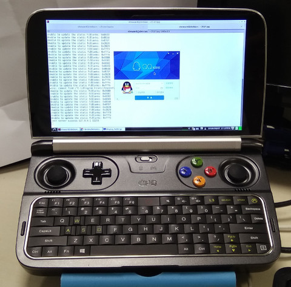

參考資訊：
https://github.com/askme765cs/Wine-QQ-TIM
安裝方式：
$ sudo dpkg -i fonts-wqy-microhei_0.2.0-beta-2_all.deb $ sudo dpkg -i ttf-wqy-microhei_0.2.0-beta-2_all.deb $ wget https://yun.tzmm.com.cn/index.php/s/XRbfi6aOIjv5gwj/download $ mv download qq.AppImage $ chmod 0777 qq.AppImage $ ./qq.AppImage
完成
